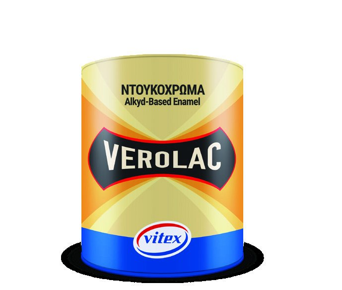

Глянцевая · сверхпрочная
Verolac
Глянцевая сверхпрочная антикоррозийная эмаль для интерьеров и экстерьеров. Повышенная твёрдость, отличная укрывистость и стабильность цвета со временем.
- Расход 14–16 м²/л
- Сушка 2–3 часа
- Разбавление 5% (T-300/T-350)